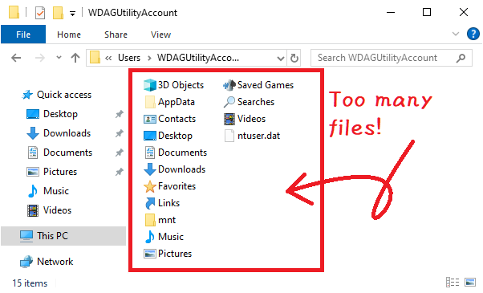
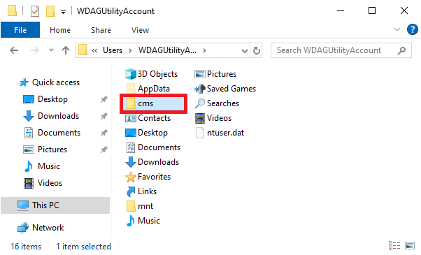
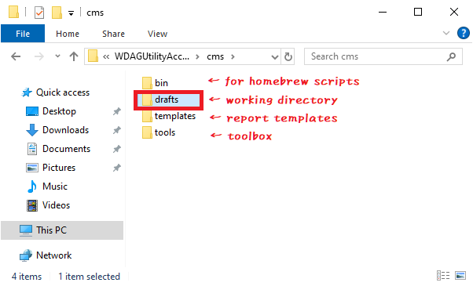

When working with a shell, it is important to first create a safe and efficient workspace. One might initially think of using the user’s home directory as a workspace, but this is not very safe. This is because the home directory already contains many directories and files managed by the system. There is a risk of accidentally deleting these files due to command operation mistakes. Here, we create a working directory under the home directory and perform shell operations in that environment. The benefits of this structure are as follows:
Prevent accidental file corruption: By creating a working directory, the risk of corrupting directories and files managed by the system in the home directory due to command operation mistakes is reduced.
Easy and understandable backups: By making the working directory the target for data backups, unnecessary system files in the home directory can be excluded from the backup target.
Key point: Prepare a working directory for safe shell operations.
The following is a proposed structure for the working directory. First, create a directory named cms under the home directory (the origin of cms is the initials of Contents Management System). Next, create a drafts directory under the cms directory, which will serve as the working directory for shell operations. Additionally, under the cms directory, you can create directories such as bin and templates to store scripts and templates.
The main purpose of this structure is to reduce the risk of file corruption due to shell operation mistakes. The drafts working directory should be used to store only the minimum necessary files. By placing frequently used tools one level above the drafts directory, most shell operations can be performed without leaving the drafts directory. For example, a script placed in the bin directory can be executed from the drafts directory with a command like: ../bin/my-script.ps1.

fig. There are too many files in the home directory!
Creating the Working Directory
Follow these steps to first create the cms directory under the home directory, and then create the drafts directory under cms. The following shows how to create the working directory using Explorer and how to create it from PowerShell with command operations.
Creating the Working Directory with Explorer
Open the home directory with Explorer
WIN+R → Type . (dot)
Create a new cms directory under the home directory
Right-click → New → Folder → Type cms → ENTER

fig. Creating the cms directory
Create a new drafts directory under the cms directory
Open the cms directory → Right-click → New → Folder → Type drafts → ENTER

fig. Creating the drafts directory
For example, create and edit files in the drafts working directory
Terms
Home Directory
The user’s home directory. In Windows, it is located at C:/Users/<username>. To access it in Explorer, WIN+R → Type . (dot).
Home in Japanese is “家” (いえ)(ie). The meaning of “家” is a building where people live. It functions as a base for the family or a personal living space. In Japan, there are various forms of homes, from traditional wooden houses to modern apartments. The term “家” includes not only the physical building but also the concept of family, household, and ancestral lineage.
Working Directory
A directory for work. It can be created anywhere, but in this article, the working directory is created under the home directory to serve as a workspace for shell operations.
{kind=link}
{kind=link}
{kind=link}